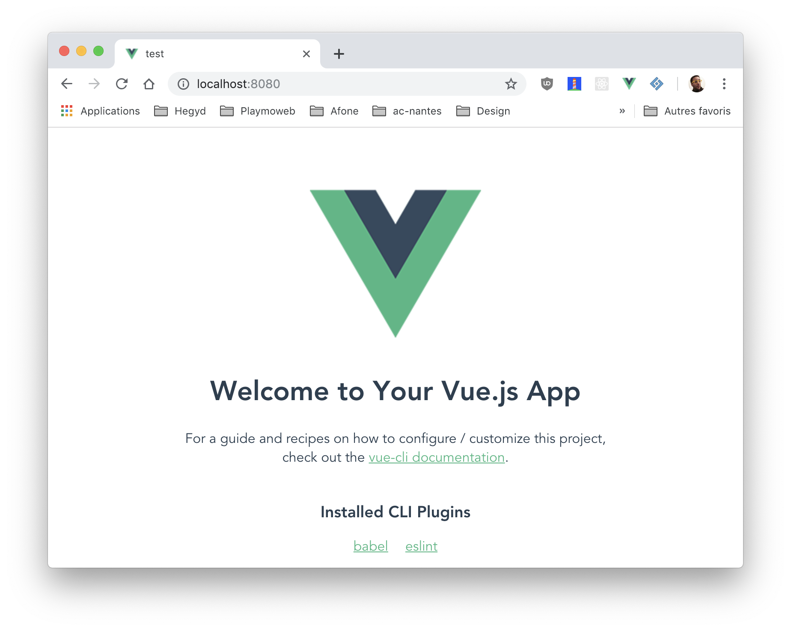
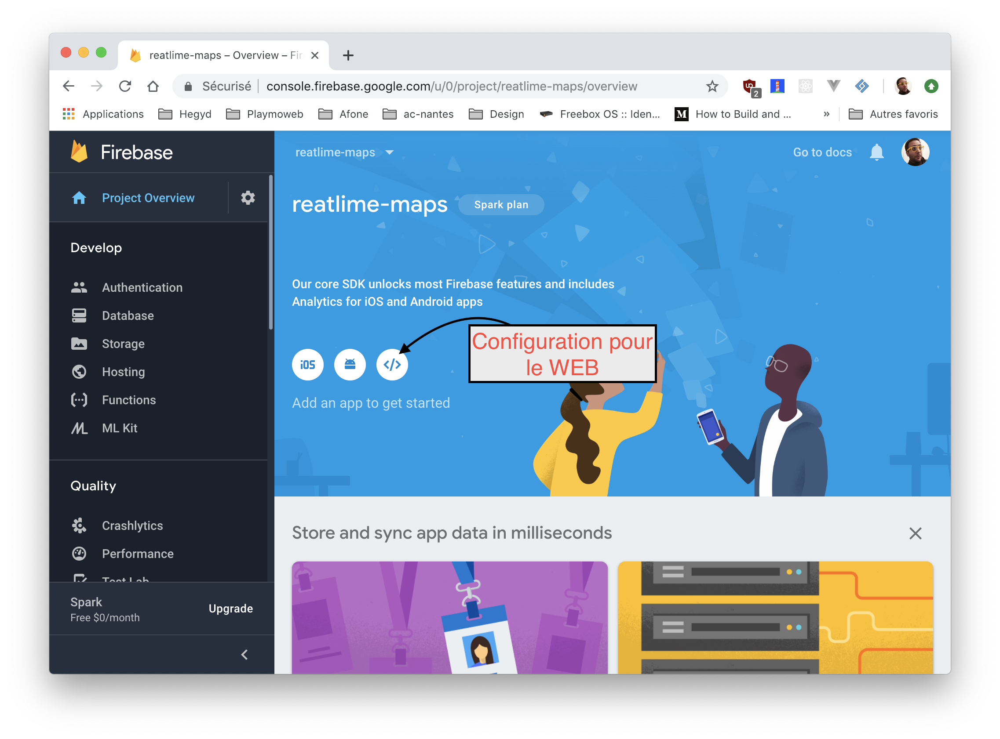
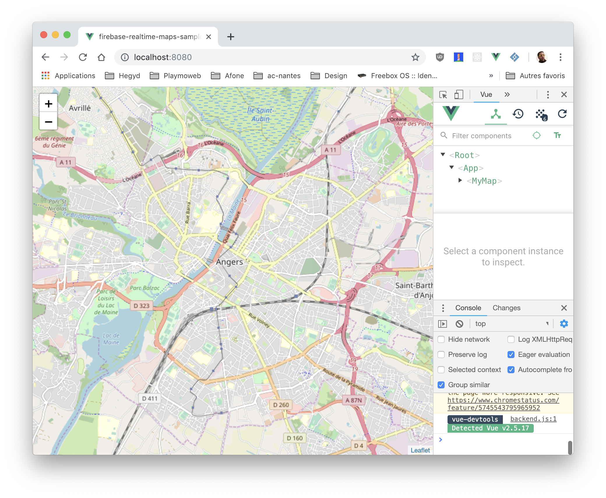

Last modified: Fri Dec 07 2018 14:16:17 GMT+0100 (heure normale d’Europe centrale)
Firebase + Vuejs
Dans ce TP nous allons découvrir Firebase RealtimeDB (base de données temps réel). Nous allons coupler cette base de données temps réel à la puissance de VueJS pour obtenir en un rien de temps une WebApplication surpuissante.
Introduction
Dans ce TP nous allons mettre en place une carte du monde qui affiche en temps réel l'emplacement des utilisateurs présent sur votre site.

La mise en place
Nous allons utiliser VueCLI pour initialiser le projet, première étape l'installation.
Installer NodeJS + VueCLI
Avant de commencer nous allons avoir besoin de plusieurs outils :
- NodeJS
- VueCli
NodeJS
La première étape va être l’installation de NodeJS, la démarche est différente en fonction de votre environnement, mais pour résumer sous Windows c’est ici prendre la version CURRENT, sous OSX le plus simple c’est via Brew brew install nodejs, et sous Linux c’est via le gestionnaire de paquet apt install nodejs
Une fois installé, vous êtes prêt, votre PC est prêt à accueillir l’outil Vue-Cli.
Vue-Cli
Vue-Cli est un outil qui simplifie la création d’un nouveau projet Vue-JS à partir de template fourni par la communauté.
Dans un terminal lancer la commande suivante dans le Node.js Command Prompt :
npm install -g @vue/cli
Maintenant que vue-cli est installé, vous avez à votre disposition sur votre ordinateur une nouvelle commande, la commande vue.
Pour créer un nouveau projet, c’est simple il suffit de lancer la commande suivante dans le Node.js Command Prompt.
Initialiser le projet
La création d'un nouveau projet est très simple. Il suffit de rentrer la commande suivante :
vue create firebase-vuejs
Choisir l'option « Default ».
⚠️ Le projet est créé dans le dossier courant. Veillez à saisir la commande dans un dossier vide.
🤓 git est déjà initialisé, vous pouvez en profiter pour pusher votre code sur Github / Gitlab.
Questions
- Pourquoi git est déjà analysé ?
- Allez jeter un coup d'œil au fichier
.gitignore
Tester
Le projet initialisé par Vue-Cli est imédiatement fonctionnel. Testez-le en saisissant :
npm run serve

Les dépendances
Maintenant que notre projet est « initialisé », nous allons avoir besoin de quelques dépendances NPM pour faire fonctionner notre projet. Notre projet va utiliser les technologies suivantes :
- firebase
- leaflet
Firebase comme vous le savez va nous servir de système de base de données. Leaflet quant à lui est une librairie qui va nous permettre d'afficher très rapidement une carte sur notre site internet.
Ajouter les dépendances
Les deux outils / librairies que nous allons utiliser sont disponibles via NPM, nous allons donc les installer / ajouter au projet via les commandes suivantes :
npm install firebase vue2-leaflet --save
Configuration de la dépendance carte
Certains plugins nécessitent de la configuration supplémentaire, ça sera le cas pour Vue2-Leaflet (et Firebase). Comme vous, je ne connais pas la configuration de l'ensemble des dépendances existantes. Première étape :
Maintenant que nous avons vu comment s'intègre le Leaflet, refléchissons comment intégrer ça dans notre projet :
- À l'arrache dans le fichier
main.js? ✋ => NON - Dans un dossier
plugins=> 👍 Oui
À votre avis pourquoi ?
Création de la partie plugin
Créer le fichier src/plugins/vue2-leaflet.js y mettre dedans :
import { L } from "vue2-leaflet";
import "leaflet/dist/leaflet.css";
// this part resolve an issue where the markers would not appear
delete L.Icon.Default.prototype._getIconUrl;
L.Icon.Default.mergeOptions({
iconRetinaUrl: require("leaflet/dist/images/marker-icon-2x.png"),
iconUrl: require("leaflet/dist/images/marker-icon.png"),
shadowUrl: require("leaflet/dist/images/marker-shadow.png")
});
- D'où vient le code ?
Déclarer le plugin
Maintenant que la configuration du « plugin » est effective nous devons le déclarer dans notre fichier main.js pour ça rien de compliquer.
Ajouter l'import :
import "./plugins/vue2-leaflet";
🤓 Avec les autres imports déjà existant.
Questions
- Pourquoi l'import est-il nécéssaire ?
- Pourquoi vue2-leaflet et pas juste leaflet ?
- Quel est l'avantage ?
Dépendance supplémentaire
Le gros avantage de NPM (et NodeJS) c'est la quantité de librairies disponibles pour répondre à un besoin, nous allons donc en profiter pour gagner du temps dans notre réalisation.
Firebase est plutôt simple à utiliser, mais nativement celle-ci ne s'intègre pas directement avec le « state » d'un composant VueJS! Mais grâce à d'excellents développeurs c'est maintenant possible et très simplement. Pour ça nous allons utiliser :
npm install vuefire --save
⚠️ Dans une prochaine étape nous allons configurer vuefire. Pour l'instant le package est disponible mais non actif.
🤓 Je vous invite quand même à aller voir la documentation de VueFire pour voir de quoi il en retourne !
Création du projet sur Firebase
Maintenant que nos dépendances sont installées et que notre projet est initialisé, nous allons configurer le projet sur Firebase :
Première étape créer le projet sur le site de Firebase

Maintenant que le projet est créé, nous allons récupérer la configuration :

Nous allons récupérer une partie du code fourni… Nous allons prendre la configuration (dans mon cas) :
// Initialize Firebase
var config = {
apiKey: "✋-CHANGE-CHANGE-CHANGE-CHANGE-✋",
authDomain: "reatlime-maps.firebaseapp.com",
databaseURL: "https://reatlime-maps.firebaseio.com",
projectId: "reatlime-maps",
storageBucket: "reatlime-maps.appspot.com",
messagingSenderId: "✋✋✋✋✋✋✋✋"
};
export default config;
Nous allons mettre le code dans le fichier src/config/firebase.js ⬅️
⚠️ ✋ Attention à bien changer la valeur de apiKey et messagingSenderId. ✋ ⚠️
BRAVO ! Votre projet est maintenant capable de « se connecter » avec Firebase !
Questions
- Et la sécurité ? À votre avis comment ça fonctionne ?
- Est-il possible de faire autrement ?
Activer la Realtime DB
Dans l'interface de Firebase activer la Realtime DB.
Modification du code pour inclure la configuration Firebase
Maintenant que nous avons ajouté la configuration, nous devons la déclarer dans notre code. Comme pour Vue2-Leaflet nous allons ajouter un fichier de « configuration du plugin » dans le dossier src/plugins/ ajouter un fichier nommé firebase.js avec le contenu suivant :
import firebaseConfig from "../config/firebase";
import firebase from "firebase/app";
import "firebase/database";
import Vue from "vue";
const firebaseApp = firebase.initializeApp(firebaseConfig);
const db = firebaseApp.database();
Vue.prototype.$db = db;
Comme pour leaflet, ajouter un import dans le fichier main.js pour référencer notre « configuration de plugin » :
import "./plugins/firebase";
Questions
- Que fait le code ?
- Comment connaitre les autres options ?
- Vue.prototype ? Kézako ? On en parle !
Testons
Bien maintenant, que nous avons mis en place les bases de notre projet, testons si celui-ci fonctionne correctement. Pour ça (dans un terminal) :
npm run serve
Après quelques secondes de compilation (pré-processing) vous devriez avoir sur votre écran :

Et dans votre navigateur toujours la même chose à savoir :
Création de notre première vue / composant.
Notre projet est maintenant prêt à recevoir son premier .vue bien à vous. Toujours dans le but d'organiser son travail nous allons commencer par créer un dossier :
src/views/
Ce dossier nous servira à ranger l'ensemble de nos vues, pour l'instant nous allons créer une vue nommée map.vue ce fichier contiendra le code source de notre carte.
Créer le fichier src/views/map.vue avec le contenu suivant :
<template>
<l-map id="map" :zoom="zoom" :center="center">
<l-tile-layer :url="url"></l-tile-layer>
</l-map>
</template>
<script>
import { LMap, LTileLayer, LMarker, LControl } from "vue2-leaflet";
export default {
name: "myMap",
data() {
return {
url: "http://{s}.tile.osm.org/{z}/{x}/{y}.png",
zoom: 13,
center: [47.472092, -0.550589]
};
},
components: {
LMap,
LTileLayer,
LMarker,
LControl
},
methods: {}
};
</script>
<style scoped>
#map {
height: 100%;
width: 100%;
}
</style>
✋ D'où vient le code ? Tout simplement une adaptation du code de démonstration fourni par Vue2-Leaflet
Utiliser notre première vue
Créer la vue ne déclenche rien, il faut maintenant l'importer. Comme vu en cours, la « base » de notre application est répartie entre deux fichiers :
- le main.js : qui contient les imports de base et la déclaration de notre objet
.vue. - l'App.vue : qui contient la « racine » de notre HTML (c'est dans celui-ci que nous allons référencer notre nouvelle vue / composant).
Modifier le App.vue par :
<template>
<myMap />
</template>
<script>
import myMap from "./view/map.vue";
export default {
name: "app",
components: {
myMap
}
};
</script>
<style>
html,
body {
margin: 0;
padding: 0;
height: 100%;
width: 100%;
}
</style>
Questions
- Quelles sont les différences ?
- Pourquoi le CSS n'est pas
scoped? - À quoi correspond
components?
Tester
Votre projet doit maintenant afficher une carte, tester rapidement via la commande :
npm run serve

Configurer VueFire
Comme pour Vue2-Leaflet et firebase, vuefire nécéssite une déclaration pour être utilisé dans le projet.
- Lire la documentation.
- Créer le fichier dans le dossier
plugins. - Réaliser l'import dans le fichier
main.js.
🤓 C'est la 3ème fois de ce TP que vous le faites, vous devez être capable de le faire de vous même.
src/plugins/vuefire.js
import Vue from "vue";
import VueFire from "vuefire";
Vue.use(VueFire);
main.js
// […]
import "./plugins/vuefire";
// […]
Connecter firebase à notre vue
Grace au plugin l'intégration de Firebase va être très simplifié. Déjà vous avez mis en place Firebase et injecter le connecteur de base de données grace au « plugin » et « Vue.prototype », nous allons devoir l'utiliser. Pour ça modifier le fichier maps.vue pour ajouter (après name) :
firebase: function() {
return {
markerList: this.$db.ref("/markerList/")
};
},
Questions :
- D'où vient
this.$db? - À quoi correspond le
/markerList/?
Et c'est tout ! Vous avez maintenant dans votre objet vue une nouvelle variable de disponible markerList celle-ci est synchronisée avec votre base de données temps réel (Firebase RealtimeDB).
Ajouter un marker
Pour ajouter un marker sur la carte nous allons utiliser la directive @stop sur l'objet l-map :
- Ajouter sur l'objet
<l-map>la directive suivante@click="addMarker". - Ajouter la méthode
addMarkerdans votre objet VueJSaddMarker(marker){…}. - À votre avis à quoi doit ressembler le code ?
- Ajouter un
console.log(marker)avez-vous une propriétélatlng?
- Ajouter un
addMarker(position) {
this.$firebaseRefs.markerList.push([
position.latlng.lat,
position.latlng.lng
]);
},
Tester
- Ouvrer la console de Firebase rendez-vous dans la partie
Database. - Lancer votre projet local
npm run serve. - Cliquer sur la carte.
- Que constatez-vous ?
Afficher les markers
Les markers ne s'affichent pas ? C'est normal! Pour l'instant nous n'avons pas mis le code permettant de les afficher. C'est l'étape à laquelle nous sommes.
La logique va être simpliste, nous devons afficher TOUS les éléments contenus dans la variable markerList déclarée précédemment.
Les étapes :
- Utilisation de l-marker
- Le mettre en place dans le
l-mapen suivant la documentation. - Mise en place d'une boucle v-for.
- et… c'est tout
- Essayer sans regarder la solution.
Le marker est à mettre dans le l-map.
<l-marker
v-for="marker in markerList"
:key="marker['.key']"
:lat-lng="marker['.value']"
>
</l-marker>
Tester
npm run serve normalement des markers doivent s'afficher. Tenter d'en ajouter d'autre.
Suppression d'un marker
Bon maintenant qu'il y a plein de marker partout nous allons mettre en place le code pour les supprimer ! Voilà la procédure à suivre :
- Ajout d'une méthode
removeMarker
removeMarker(markerKey) {
this.$firebaseRefs.markerList.child(markerKey).remove();
},
- Ajouter la directive sur
l-marker:
@click="() => removeMarker(marker['.key'])"
Tester
npm run serve tenter de supprimer un marker en cliquant dessus.
Tester à plusieurs
Accéder à plusieurs au même projet (via votre IP) pour tester la synchronisation.
Amélioration 1 : centrer la carte sur votre position
Profitons des nouvelles fonctionnalités de nos navigateurs pour améliorer notre carte. Actuellement la carte est centrée sur Angers… C'est pratique… Si on se trouve à Angers… dans tous les autres cas c'est pas forcément adapté. Nous allons donc utiliser l'API geolocation de notre navigateur.
Celle-ci permet de localiser une personne en fonction de sa connexion internet (ou GPS / Réseau téléphonique si disponible)
- Documentation de l'API geolocation.
- Ajouter une méthode dans le code dans le composant
map.vue. - La méthode doit mettre à jour le
this.center = [lat, lng]. - La méthode doit être appelé via un clique utilisateur Documentation de LControl
template :
Dans le l-map
<l-control> <button @click="getUserLocation">Localisez-moi</button> </l-control>
methods :
getUserLocation() {
if ("geolocation" in navigator) {
navigator.geolocation.getCurrentPosition(
position => {
this.center = [position.coords.latitude, position.coords.longitude];
},
error => {
console.error(error);
}
);
}
}